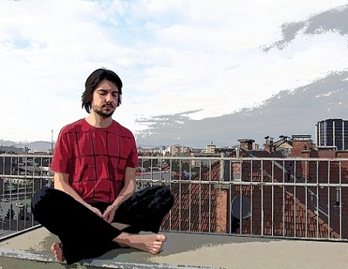
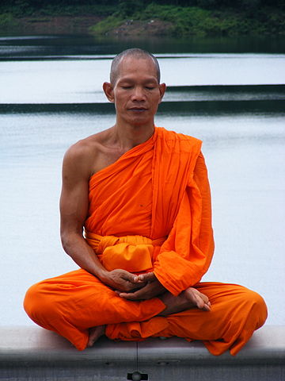

A Guide To Meditation
Meditation is the process of training the mind.
It allows for reflection, introspection, and relaxing both mind and body.
Types of Meditation
- Guided Meditation
- Assisted meditation with someone guiding you with their voice. Similar to hypnosis
- Religious Meditation
- Meditation focused on specific religious or spiritual goals. Examples include yoga (hinduism) and zen (buddhism)
- Mindfulness
- Becoming conscious of ones mind and body through meditation; includes body-scan meditation
We will focus on mindfulness due to its simplicity and isolation
How to Meditate
Crossed Legs
Cross your legs at the shins
Settle your knees atop the arch of each foot
Keep your hips wide with knees pressed down slightly
Seated Upright
Sit on a support to raise you above your ankles
Keep your shoulders and back upright, spine positioned neutrally
Pull yourself up through the crown of your head
Face Relaxed
Relax your face and eye muscles
Eyes allowed to rest partially opened
Mouth curved gently upward
Hands Bridged In Lap
Fingers folded loosely together
Tips of the thumbs touching lightly
Thumb phalanges parallel to the ground
Meaningful Breath
Breathe deeply and slowly through the nose
Fill the lower belly and inflate upward
Release the breath emptying the belly last
Concentration

Keep your breathing steady and natural
Focus on nothing with an empty mind
You are a rock and your thoughts are drifting past on the breeze
You are the mountain and your thoughts are the clouds
You cannot chase your thoughts and must let them pass
Resources
Yourself